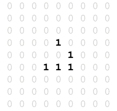
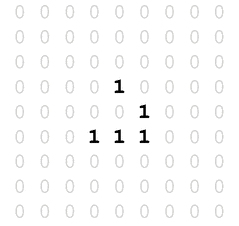

|
1
2
3
4
5
6
7
8
9
10
11
12
13
14
15
16
17
18
19
20
21
22
23
24
25
26
27
28
29
30
31
32
33
34
35
36
37
38
39
40
41
42
43
44
45
46
47
48
49
50
51
52
53
54
55
56
57
58
59
60
61
62
63
64
65
66
67
68
69
70
71
72
73
74
75
76
77
78
79
80
81
82
83
84
85
86
87
88
89
90
91
92
93
94
95
96
97
98
99
100
101
102
103
104
105
106
107
108
109
110
111
112
113
114
115
116
117
118
119
120
121
122
123
124
125
126
127
128
129
130
131
132
133
134
135
136
137
138
139
140
141
142
143
144
145
146
147
148
149
150
151
152
153
154
155
156
157
158
159
160
|
\documentclass{article}
\usepackage[a0paper]{geometry}
\usepackage{luacode}
\usepackage{animate}
\usepackage{tikz}
\usepackage{xcolor}
\usepackage[active, tightpage]{preview}
\PreviewEnvironment{animateinline}
%\PreviewEnvironment{tikzpicture}
\tikzset{%
cellframe/.style={%
minimum size=5mm,%
draw,%
fill=white,%
fill opacity=0%
}%
}
\tikzset{%
alivecell/.style={%
circle,%
inner sep=0pt,%
minimum size=4mm,%
fill=black%
}%
}
\setlength{\PreviewBorder}{5mm}
\begin{document}
\begin{luacode*}
iterations = 36
grid = {{0, 0, 0, 0, 0, 0, 0, 0, 0},
{0, 0, 0, 0, 0, 0, 0, 0, 0},
{0, 0, 0, 0, 0, 0, 0, 0, 0},
{0, 0, 0, 0, 1, 0, 0, 0, 0},
{0, 0, 0, 0, 0, 1, 0, 0, 0},
{0, 0, 0, 1, 1, 1, 0, 0, 0},
{0, 0, 0, 0, 0, 0, 0, 0, 0},
{0, 0, 0, 0, 0, 0, 0, 0, 0},
{0, 0, 0, 0, 0, 0, 0, 0, 0}}
\end{luacode*}
\begin{luacode*}
function evolve(grid)
local temp = {}
local gridsize = #grid
for i = 1, gridsize do
temp[i] = {}
for j = 1, gridsize do
temp[i][j] = 0
end
end
for i = 1, gridsize do
for j = 1, gridsize do
iminus = i - 1
iplus = i + 1
jminus = j - 1
jplus = j + 1
if iminus == 0 then
iminus = gridsize
end
if iplus == gridsize + 1 then
iplus = 1
end
if jminus == 0 then
jminus = gridsize
end
if jplus == gridsize + 1 then
jplus = 1
end
neighbourcount = grid[iminus][jminus] +
grid[iminus][j] +
grid[iminus][jplus] +
grid[i][jminus] +
grid[i][jplus] +
grid[iplus][jminus] +
grid[iplus][j] +
grid[iplus][jplus]
if (grid[i][j] == 1 and (neighbourcount == 2 or neighbourcount == 3)) or (grid[i][j] == 0 and neighbourcount == 3) then
temp[i][j] = 1
else
temp[i][j] = 0
end
end
end
return temp
end
function display(grid)
local gridsize = #grid
for i = 1, gridsize do
for j = 1, gridsize do
tex.sprint([[\node[cellframe] at (]])
tex.sprint((i - 1) * 5)
tex.sprint([[mm,]])
tex.sprint(-((j - 1) * 5))
tex.sprint([[mm){0};]])
if grid[j][i] == 1 then
tex.sprint([[\node[alivecell] at (]])
tex.sprint((i - 1) * 5)
tex.sprint([[mm,]])
tex.sprint(-((j - 1) * 5))
tex.sprint([[mm){1};]])
end
end
end
end
function animate(grid, iterations)
for i = 1, iterations - 1 do
display(grid)
tex.sprint([[\newframe]])
grid = evolve(grid)
end
display(grid)
end
function frames(grid, iterations)
for i = 1, iterations - 1 do
tex.sprint([[\begin{tikzpicture}]])
display(grid)
grid = evolve(grid)
tex.sprint([[\end{tikzpicture}]])
tex.sprint([[\clearpage]])
end
tex.sprint([[\begin{tikzpicture}]])
display(grid)
tex.sprint([[\end{tikzpicture}]])
end
\end{luacode*}
\noindent\begin{animateinline}[autoplay,loop,
begin={\begin{tikzpicture}[scale=1]},
end={\end{tikzpicture}}]{5}
\luadirect{animate(grid, iterations)}
\end{animateinline}
%\noindent\luadirect{frames(grid, iterations)}
\end{document}
|


 



{kind=link}